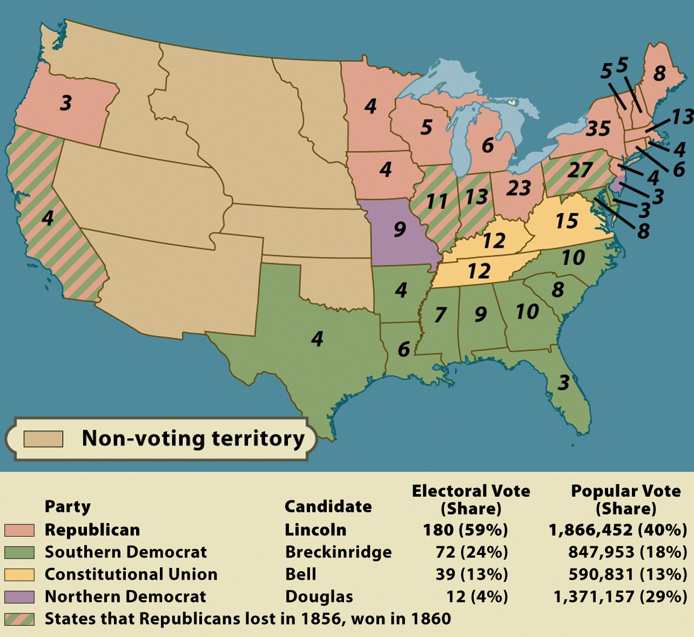

The Election of 1860

Entering the election of 1860, the Republican Party was growing stronger (despite being
only six years old), while the Democratic Party was heavily divided over the issue of
slavery in general and over Democratic President James Buchanan's handling of events in
"Bleeding Kansas" in particular. The Republicans nominated Abraham Lincoln of Illinois,
while the Democrats--unable to agree on a single candidate--split into two wings, with the
Northern wing throwing its support behind Stephen A. Douglas of Illinois, while the
Southern wing lined up behind John C. Breckinridge of Kentucky. John Bell of Tennessee
also put himself forward as a compromise candidate; his one and only pledge was to keep
the country from collapsing. Though Lincoln did not appear on the ballot in Southern
states, he sailed to an easy victory, triggering the secession of the seven states of the
"Deep South," and leading to the Civil War.
The fact that the opposition vote was split among three candidates made Lincoln's
victory a foregone conclusion, though post-election analysis makes clear that he would
have won even if the Democrats had remained united. More specifically, the split vote gave
California to Lincoln, but he took a clear majority of the popular vote in Pennsylvania,
Illinois, and Indiana. Thus, even in the absence of a divided Democratic Party and a
third-party candidate, he would have taken 176 electoral votes (152 needed for election)
and the presidency.
Note: Click on the image for a larger version.
Source: Eric Foner, Give Me Liberty! An American History (New York: W. W. Norton & Company, 2008).
|

{kind=link}